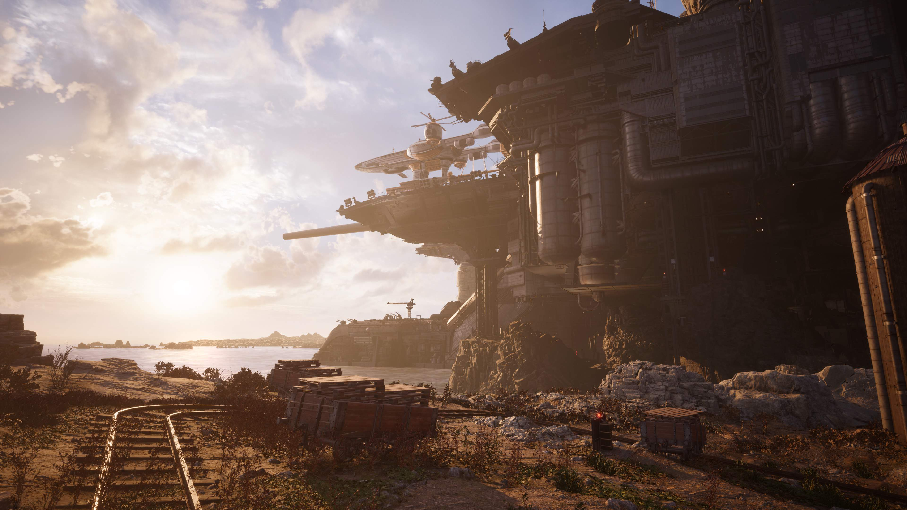

La travesía desconocida continúa...
Tras escapar de Midgar, la ciudad del mako, Cloud y sus amigos rompieron las cadenas del destino y se embarcaron en un viaje hacia los agrestes páramos. Nuevas aventuras aguardan en un vasto y multifacético mundo, mientras recorres las verdes planicies con un chocobo y exploras los extensos ambientes.
FINAL FANTASY VII REBIRTH es la esperadísima nueva historia dentro del proyecto del remake de FINAL FANTASY VII, una reimaginación del icónico juego original convertido por sus propios creadores en tres títulos independientes. En esta entrega, los jugadores podrán disfrutar de varios elementos nuevos mientras la historia se desarrolla hasta culminar en un viaje a la capital olvidada del FINAL FANTASY VII original.
Ir a la historia
Escenarios
Cloud y compañía escapan de la ciudad de Midgar en busca de Sefiroth, el héroe envilecido. Su viaje a través del mundo será una aventura que determinará el destino del planeta.
Un viaje que llevará al grupo de protagonistas por los lugarares más reconditos de todo el planeta, desde las extentas llanuras en Grasslands, hasta la antiguedad de los Cetra en The Forgotten City.
Ir a escenarios
Personajes
En esta aventura independiente tanto para fans como para recién llegados, Cloud y sus camaradas se aventuran por el planeta en pos de un destino que aún no está escrito, convirtiendo cada paso que dan fuera de la ciudad distópica de Midgar en una aventura nueva y misteriosa.Conociendo personajes entrañables como la gran ninja de Wutai, Yuffie Kisaragi o al misterioso Vicnent Valentine, pero a su vez tendremos el regreso de los personajes más queridos de la saga como la dulce Aerith y la leal Tifa.
Ir a personajes